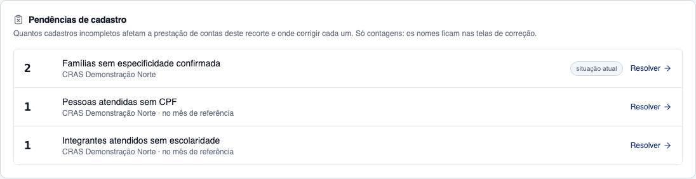
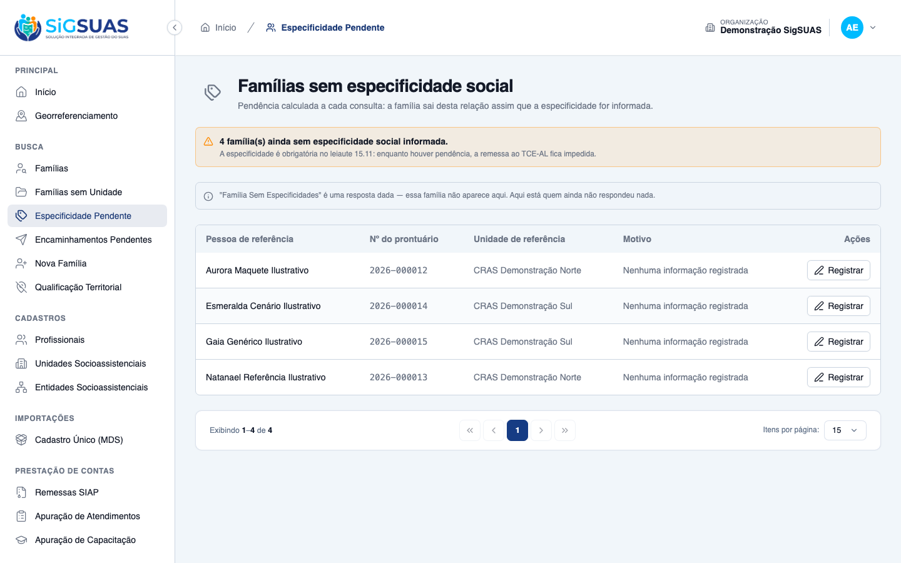

Relatório de Critérios de Aceite — Pendências de cadastro na apuração (10994b)
Resumo
9 critérios. 3 por navegador (CA01, CA02, CA09), 1 combinado (CA04) e 5 automatizados (CA03, CA05–CA08), todos atendidos. As contagens da tela vêm da massa fictícia de 07/2026 e coincidem com o esperado.json; os critérios de visibilidade do Operacional, pessoa distinta, ausência de dado pessoal, estado vazio e isolamento estão cobertos pela suíte.
| CA | Critério | Status |
|---|---|---|
| CA01 | Master vê as cinco pendências sem filtro de unidade | ATENDIDO · navegador |
| CA02 | Filtro de unidade oculta as pendências da organização | ATENDIDO · navegador |
| CA03 | Operacional vê só as suas unidades | ATENDIDO · automatizado |
| CA04 | Mesma contagem da fila | ATENDIDO · navegador + automatizado |
| CA05 | Pessoa sem CPF conta uma vez por unidade e mês | ATENDIDO · automatizado |
| CA06 | Nenhum dado pessoal na resposta | ATENDIDO · automatizado |
| CA07 | Estado vazio | ATENDIDO · automatizado |
| CA08 | Isolamento | ATENDIDO · automatizado |
| CA09 | Atalho respeita o acesso do destino | ATENDIDO · navegador |
CA01 — Master vê as cinco pendências sem filtro de unidade ATENDIDO · navegador
Critério (Gherkin): Cenário: CA01 — Master vê as cinco pendências sem filtro de unidade Dado 3 famílias sem unidade de referência, 4 sem especificidade confirmada, 2 pessoas atendidas em julho sem CPF, 1 integrante atendido sem escolaridade e 1 entidade sem CNEAS Quando o Master abre a apuração de 07/2026 sem filtro de unidade Então a seção "Pendências de cadastro" mostra as cinco pendências com essas contagens E cada uma tem um atalho para a tela onde se resolve
Como foi testado: Master da organização demo abre /app/prestacao-contas/apuracao-atendimentos, escolhe 2026 / 07 — Julho, sem filtro de unidade.
- A seção “Pendências de cadastro” mostra os cinco tipos: 3 famílias sem unidade de referência; 2 + 2 famílias sem especificidade confirmada (CRAS Norte e Sul); 1 + 3 pessoas atendidas sem CPF; 1 integrante sem escolaridade; 1 entidade sem CNEAS.
- Cada item tem o atalho “Resolver”; os de situação atual levam o selo correspondente.
- Os números da spec eram ilustrativos; os da tela batem com o esperado.json da massa.


CA02 — Filtro de unidade oculta as pendências da organização ATENDIDO · navegador
Critério (Gherkin): Cenário: CA02 — Filtro de unidade oculta as pendências da organização Quando o Master filtra a apuração pelo CRAS Norte Então aparecem apenas as pendências da unidade CRAS Norte E "famílias sem unidade de referência" e "entidades sem CNEAS" não aparecem
Como foi testado: Mesma tela, filtro de unidade “CRAS Demonstração Norte”.
- Só as pendências do CRAS Norte aparecem (2 sem especificidade, 1 sem CPF, 1 sem escolaridade).
- Famílias sem unidade de referência e entidades sem CNEAS não aparecem.

CA03 — Operacional vê só as suas unidades ATENDIDO · automatizado
Critério (Gherkin): Cenário: CA03 — Operacional vê só as suas unidades Dado o Operacional com attendance-reports.view, lotado apenas no CRAS Sul Quando ele abre a apuração de 07/2026 Então vê apenas as pendências de unidade do CRAS Sul E não vê as pendências da organização
Como foi testado: Pest (AttendanceReportRegistrationPendenciesTest): Operacional com attendance-reports.view lotado só no CRAS Sul. Na massa, o P7 não tem essa permissão (o Master não consegue concedê-la), por isso o critério não foi exercitado na tela.
- Vê apenas as pendências de unidade do CRAS Sul e nenhuma pendência da organização.
Evidência por cobertura automatizada — ver Anexo.
CA04 — Mesma contagem da fila ATENDIDO · navegador + automatizado
Critério (Gherkin): Cenário: CA04 — Mesma contagem da fila Quando comparo a contagem de "famílias sem unidade de referência" na apuração Então ela é igual ao total da fila "Famílias sem unidade" E o mesmo vale para "famílias sem especificidade" e a fila "Especificidade pendente"
Como foi testado: Atalho “Resolver” de famílias sem especificidade levou à fila “Especificidade Pendente”; comparação com a soma da apuração. Pest compara as contagens com as filas.
- Fila: 4 famílias sem especificidade social; apuração: 2 (CRAS Norte) + 2 (CRAS Sul) = 4.
- Ressalva (revisão de código, CR-001): uma família sem unidade e sem especificidade aparece na fila, mas na apuração conta só como “sem unidade de referência”. Na massa isso não ocorre; a regra aguarda decisão do PO.

CA05 — Pessoa sem CPF conta uma vez por unidade e mês ATENDIDO · automatizado
Critério (Gherkin): Cenário: CA05 — Pessoa sem CPF conta uma vez por unidade e mês Dado uma pessoa sem CPF atendida 3 vezes no CRAS Norte em julho Então "pessoas atendidas sem CPF" do CRAS Norte em 07/2026 conta 1
Como foi testado: Pest: pessoa sem CPF atendida 3 vezes no CRAS Norte em julho.
- Conta 1 (pessoas distintas por unidade e mês); atendimentos cancelados não contam.
Evidência por cobertura automatizada — ver Anexo.
CA06 — Nenhum dado pessoal na resposta ATENDIDO · automatizado
Critério (Gherkin): Cenário: CA06 — Nenhum dado pessoal na resposta Quando inspeciono a resposta de GET /api/client/attendance-reports Então registration_pendencies traz apenas kind, count, scope, social_unit_uuid e target_route
Como foi testado: Pest: chaves do bloco registration_pendencies.
- Cada item traz apenas kind, count, scope, social_unit_uuid e target_route — nenhum nome, CPF ou uuid de família ou pessoa.
Evidência por cobertura automatizada — ver Anexo.
CA07 — Estado vazio ATENDIDO · automatizado
Critério (Gherkin): Cenário: CA07 — Estado vazio Dado uma organização sem nenhuma pendência de cadastro Quando abro a apuração Então a seção mostra "Nenhuma pendência de cadastro neste recorte"
Como foi testado: Pest (organização sem pendências) + Vitest do RegistrationPendenciesPanel.
- A API devolve a lista vazia e o painel mostra “Nenhuma pendência de cadastro neste recorte”.
Evidência por cobertura automatizada — ver Anexo.
CA08 — Isolamento ATENDIDO · automatizado
Critério (Gherkin): Cenário: CA08 — Isolamento Dado outra organização com 5 famílias sem unidade de referência Quando o Master da primeira organização abre a apuração Então essas 5 famílias não entram na contagem
Como foi testado: Pest (RegistrationPendenciesIsolationTest): outra organização com 5 famílias sem unidade de referência.
- Essas famílias não entram na contagem da primeira organização.
Evidência por cobertura automatizada — ver Anexo.
CA09 — Atalho respeita o acesso do destino ATENDIDO · navegador
Critério (Gherkin): Cenário: CA09 — Atalho respeita o acesso do destino Dado o Master na seção de pendências Quando clica no atalho de "famílias sem especificidade" Então é levado à fila "Especificidade pendente" já existente
Como foi testado: Na seção, clique em “Resolver” de “Famílias sem especificidade confirmada”.
- O Master é levado à fila “Especificidade Pendente” (/app/cadastros/familias-especificidade-pendente), que já existia, com as 4 famílias.

Observações e ressalvas
Massa de evidência
As telas foram capturadas sobre a massa fictícia da #10994 populada pela modalidade híbrida (seed), que é a única forma de existirem as pendências de organização (família sem unidade e entidade sem CNEAS), recusadas pela API.
Anexo — Cobertura automatizada (Pest --filter="RegistrationPendenc|SocialEntityCneasRule" + Vitest RegistrationPendenciesPanel)
PASS Tests\Unit\Services\SocialEntityCneasRuleTest
✓ it reproduces the NumeroCNEAS rule of the SIAP remittance (RN10) wi… 0.02s
✓ it reproduces the NumeroCNEAS rule of the SIAP remittance (RN10) with dataset "vazio"
✓ it reproduces the NumeroCNEAS rule of the SIAP remittance (RN10) with dataset "só espaços"
✓ it reproduces the NumeroCNEAS rule of the SIAP remittance (RN10) with dataset "não numérico"
✓ it reproduces the NumeroCNEAS rule of the SIAP remittance (RN10) with dataset "com pontuação"
✓ it reproduces the NumeroCNEAS rule of the SIAP remittance (RN10) with dataset "mais de 13 dígitos"
✓ it reproduces the NumeroCNEAS rule of the SIAP remittance (RN10) with dataset "exatamente 13 dígitos"
✓ it reproduces the NumeroCNEAS rule of the SIAP remittance (RN10) with dataset "menos de 13 dígitos"
✓ it reproduces the NumeroCNEAS rule of the SIAP remittance (RN10) with dataset "inteiro"
✓ it reproduces the NumeroCNEAS rule of the SIAP remittance (RN10) with dataset "com espaços nas bordas"
PASS Tests\Feature\Attendance\AttendanceReportRegistrationPendenciesTest
✓ it gives the Master without unit filter the five kinds with the sce… 0.58s
✓ it shows only the filtered unit items and no organization items whe… 0.09s
✓ it shows the Operacional only the unit items of the units he is ass… 0.17s
✓ it counts exactly what the two queues list (CA04 — single criterion… 0.19s
✓ it counts a person without CPF attended three times in the month on… 0.08s
✓ it returns only kind, count, scope, social_unit_uuid and target_rou… 0.11s
✓ it returns an empty list for an organization without registration p… 0.06s
✓ it runs at most one aggregated query per kind regardless of the num… 0.08s
PASS Tests\Feature\TenantIsolation\RegistrationPendenciesIsolationTest
✓ it never counts another organization registration pendencies (CA08/… 0.07s
Tests: 19 passed (112 assertions)
Duration: 1.97s
(Use `node --trace-warnings ...` to show where the warning was created)
✓ src/modules/attendance-reports/components/RegistrationPendenciesPanel.test.ts (7 tests) 60ms
Test Files 1 passed (1)
Tests 7 passed (7)
Start at 16:03:09
Duration 602ms (transform 49ms, setup 8ms, collect 101ms, tests 60ms, environment 237ms, prepare 37ms)